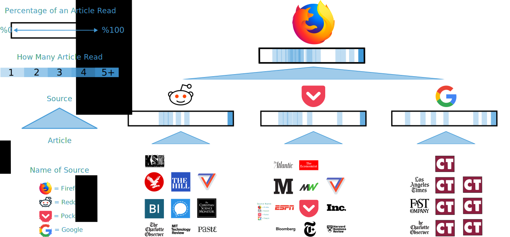

How Do I Browse the Web?
☰
Home
Vizualization
Data

Legend
Percentage of an Article Read
Number of Articles Read
Articles
Source
Legend
Source Name
How Much of an Article Did I Finish?
Time Read
URL
Percent Read
2/14/18 3:07
Eat, Pray, Love: An Ash Wednesday and Valentine's Day Dilemma
33.00%
2/14/18 3:27
What students know that experts don't: School is all about signaling, not skill-building
30.11%
2/14/18 4:21
Maryland Is Doing its Best to Destroy its Craft Beer Industry For Good This Month
36.43%
2/15/18 4:23
Are Panthers giving minorities a fair shake in general manager, ownership searches?
100.00%
2/19/18 8:59
Self-Driving Cars Will Kill Things You Love (And a Few You Hate)
100.00%
2/20/18 9:00
This is the real reason many Americans stay poor
24.00%
2/20/18 9:05
Young Japanese are surprisingly content
100.00%
2/21/18 12:00
Signal Foundation
56.00%
2/21/18 12:15
New data shows Netflix's number of movies has gone down by thousands of titles since 2010
100.00%
2/21/18 12:21
Tech companies should stop pretending AI won't destroy jobs
100.00%
2/21/18 1:00
For this robot, the secret to crawling is artificial snakeskin
31.97%
2/22/18 9:05
Why university libraries are tossing millions of books
0.479908152
2/22/18 9:10
Trump: I never said 'give teachers guns'
0.404886562
2/22/18 10:37
Why isn't Monk playing? Lamb starting? Charlotte Hornets winning? We asked the coach
100.00%
2/22/18 10:45
My original iPod is a time capsule from 2002
100.00%
2/22/18 11:49
Virginia Tech beats Clemson, 65-58, moves off of NCAA Tournament bubble
100.00%
2/22/18 11:53
Virginia Tech library does not provide a comfortable study environment
100.00%
2/22/18 11:55
Virginia Tech serves as Hogwarts for its students
86.71%
2/22/18 0:00
Virginia Tech's new streaming service: 8 must-watch movies
15.65%
2/22/18 0:02
Library needs more funding
100.00%
2/22/18 0:04
Library funding must be higher on list of priorities
80.00%
2/22/18 0:07
Newman Library gets makeover
51.78%
2/22/18 0:08
Rajon Rondo treats 320 students to screening of Black Panther in Louisville
100.00%
2/23/18 11:22
US planning to create 'Space Corps' as sixth branch of armed forces
100.00%
2/23/18 11:28
The New Preschool Is Crushing Kids
27.72%
2/23/18 11:32
The Secret History of Tiger Woods
37.36%"
2/23/18 11:46
How to Work 40 Hours in 16.7
100.00%
2/23/18 11:49
A Study of 1 Million Teenagers Reveals This Much Screen Time a Day Leads to the Happiest Kids
74.84%
2/23/18 11:52
What Could Amazon's Approach to Health Care Look Like?
46.69%
2/23/18 11:46
How Lego Became The Apple Of Toys
40.00%
2/23/18 11:46
The post-Jobs Apple has soared financially, but lacks a breakthrough product
19.52%